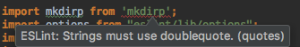
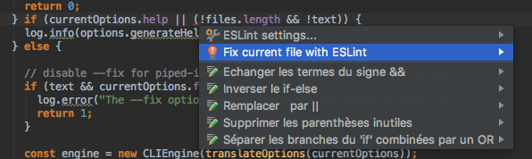
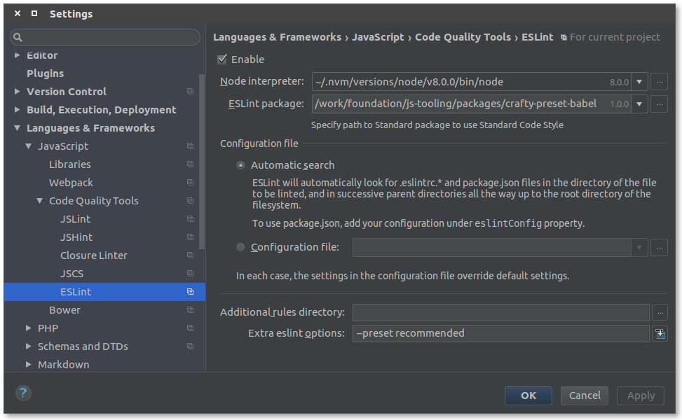

Table of Contents
IntelliJ IDEA : in-editor linting

With in-editor linting you can lint your files while linting and also fix some errors automatically with alt-enter.

Ensure you have the ESLint plugin in your IDE.

This can be changed per-project, the important options are :
- Enable: √
- Node Interpreter : either use the one on your system or the one in your project (generally
src/main/frontend/node/node) - ESLint Package : point to your
crafty-preset-babelpackage (generallynode_modules/crafty-preset-babel/) - Extra ESLint options : Here you choose the presets you want to apply. See below
Presets
-
formatBase formatting rules, should work on any code (included inlegacyandrecommended) -
nodeAdds environment information for Node.js -
legacyFor all your EcmaScript 5 code -
recommendedFor al your EcmaScript 2015+ code, also contains rules for React
You can use the number of presets you wish, the format preset is the one checked by the hooks
You can define them with --preset {presetName}
For example running with --preset recommended will verify for formatting, common rules, EcmaScript 2015+ specific and React specific rules.